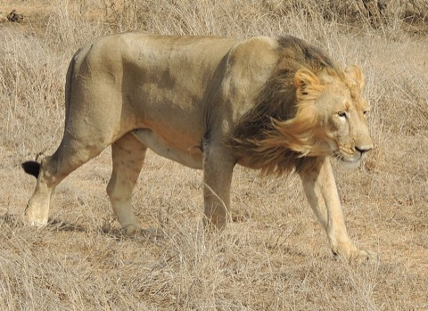
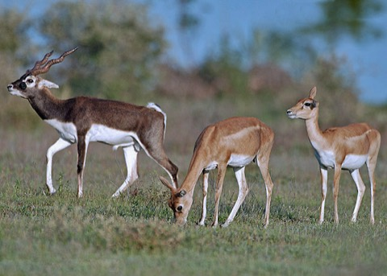
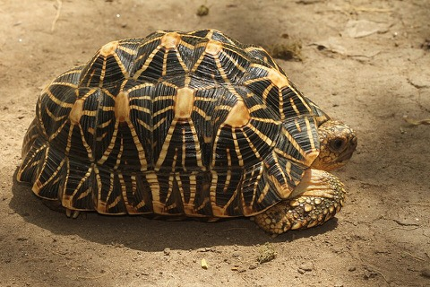
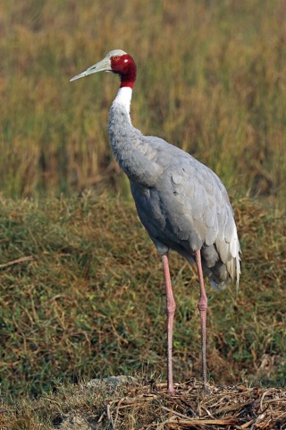

Good Morning,
Sourav Tambe 👋🏻
My Species Edit

Asiatic lion9 animals

Blackbuck64 animals

Indian star tortoise43 animals

Sarus crane6 animals
The header is live sky, like Apple Weather, in all eight of V2’s climate states plus snow. Clouds drift in two or three layers at different speeds. Rain falls and splashes on the search field and the cards. Storms flash with lightning, mist rolls through the trees, snow crystals swirl in the wind while frost creeps in at the corners, and at night the stars blink. The readout next to the bell always matches the sky behind it.
This header changes weather every 7 seconds. The new sky fades in over the old one in 1.6 seconds, and the readout and the text colour change with it. Tap a state to hold it there; tap Play to start the cycle again.



